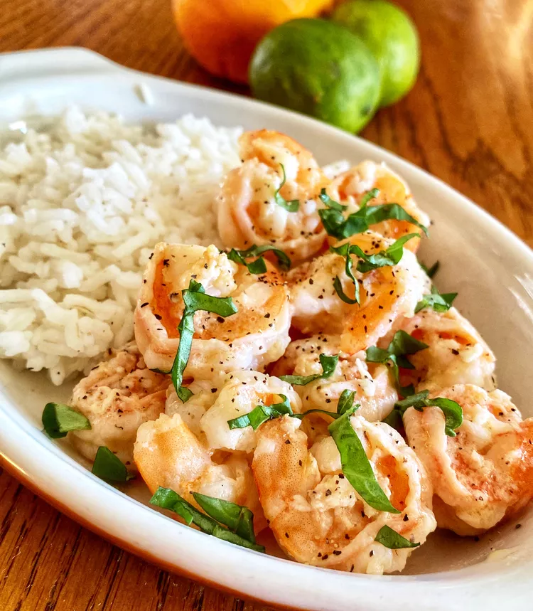

Mojo Shrimp

Description
These Cuban-inspired mojo shrimp are marinated in a garlic and citrus marinade made with the juice and zest of an orange and three limes. I serve it with white rice, crusty bread, a green salad, and the mojo sauce on the side for dipping.
Ingredients
Marinade:
- ¼ cup extra-virgin olive oil
- 3 medium limes, zested and juiced
- 1 medium orange, zested and juiced
- 6 cloves garlic, finely chopped
- 1 teaspoon dried oregano
- ½ teaspoon salt
- ½ teaspoon ground black pepper
- ¼ teaspoon ground cumin
Shrimp:
- 1 pound large shrimp - peeled, deveined, and butterflied
- 2 tablespoons extra-virgin olive oil
Steps
- Make the marinade: Whisk oil, lime juice and zest, orange juice and zest, garlic, oregano, salt, pepper, and cumin together in a glass or ceramic bowl.
- Marinate the shrimp: Place shrimp into marinade and toss to evenly coat. Cover the bowl with plastic wrap and marinate in the refrigerator for 4 to 6 hours.
- When ready to cook, remove shrimp from marinade and shake off excess. Reserve marinade.
- Heat oil in a large skillet over medium heat. Add shrimp and cook until bright pink on the outside and the meat is opaque, 4 to 7 minutes. Transfer shrimp to a plate.
- Pour marinade into the skillet. Simmer over medium-low heat until slightly thickened, 5 to 8 minutes. Serve alongside shrimp.